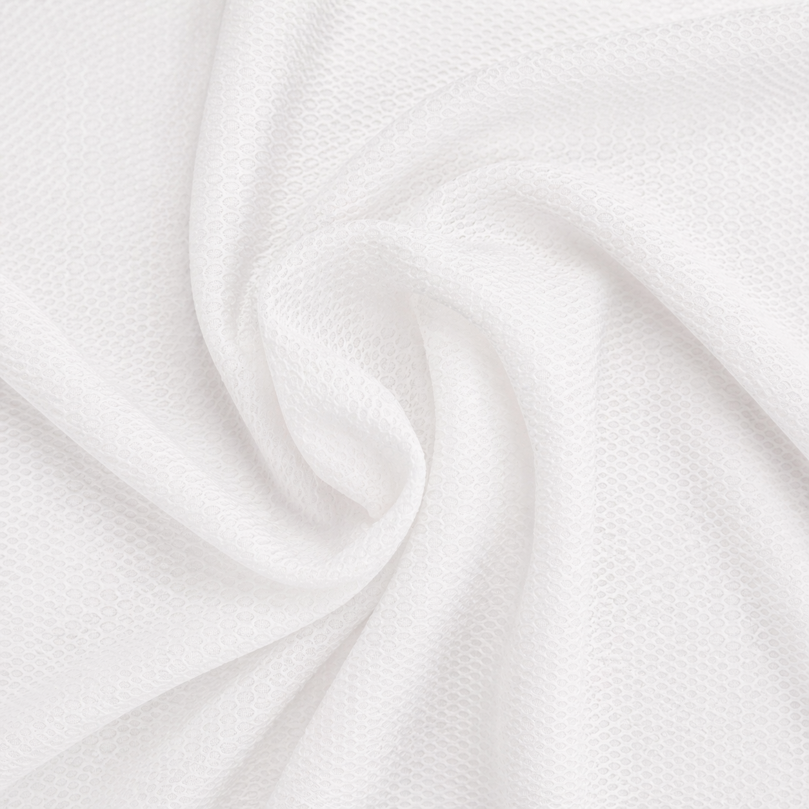

布料特色
可依排汗、透氣、彈性、厚薄、印花適性與手感挑選，適合從打樣到批量採購的成衣開發流程。
福麟商行位於新北市三重區碧華街，供應機能布、吸濕排汗布、涼感布、N66尼龍布、彈性針織布與熱昇華印花用布。可依用途、手感、彈性、克重與參考照片協助找布。
可依排汗、透氣、彈性、厚薄、印花適性與手感挑選，適合從打樣到批量採購的成衣開發流程。
運動服、團體服、瑜珈服、機能上衣、內著、制服、印花T恤、外套與品牌成衣開發。
請提供用途、數量、希望幅寬、克重、彈性需求、顏色或參考照片。若有樣布，也可 LINE 傳照片先比對。
福麟首頁主力布種同步列在機能布頁，客人可以直接依排汗、透氣、厚薄、涼感與印花用途快速判斷。

幅寬：62 吋；碼重：190g。吸濕排汗、數位熱昇華專用，適合運動服、團體服、活動布料。

幅寬：62 吋；碼重：210g。透氣、環保紗、導濕排汗，適合機能上衣、活動背心、制服布料。

幅寬：62/72 吋；碼重：200/230g。柔軟、挺度平衡、適合熱昇華，適合機能服飾與品牌布樣。

幅寬：64 吋；碼重：250g。大孔洞、大網目、透氣明顯，適合運動休閒服、背心、外套與數位印花。

幅寬：62 吋；碼重：400g。厚實、有肉身、耐磨，適合外套、長褲與厚磅機能服。

幅寬：58 吋；碼重：180g。輕薄、滑順、涼感舒適，適合夏季機能服、運動上衣、內搭與團體服。
| 項目 | 可討論規格 |
|---|---|
| 成分 | 聚酯纖維、尼龍、N66尼龍、OP彈性纖維等，依布種確認 |
| 幅寬 | 常見 56-72 吋，依實際布種與批次確認 |
| 克重 | 可依成衣用途挑選輕薄、中厚或厚實布感 |
| 彈性 | 可詢問雙面彈、四面彈、低彈或無彈布種 |
| 可做產品 | 運動服、T恤、內著、瑜珈服、團體服、機能外套 |
加入 LINE 詢價、傳照片找布、索取布卡或討論成衣工廠大量採購。